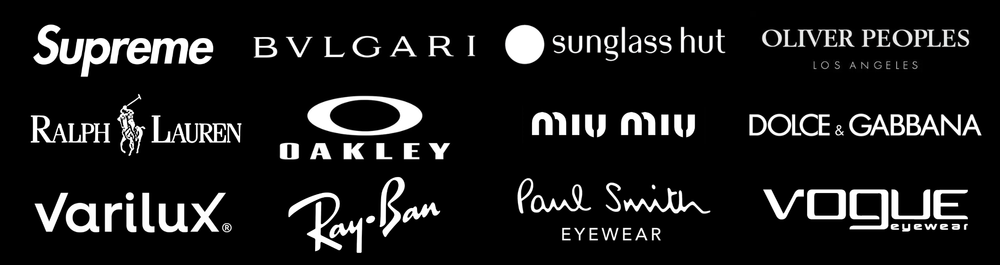
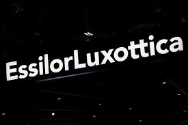
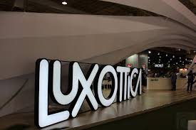
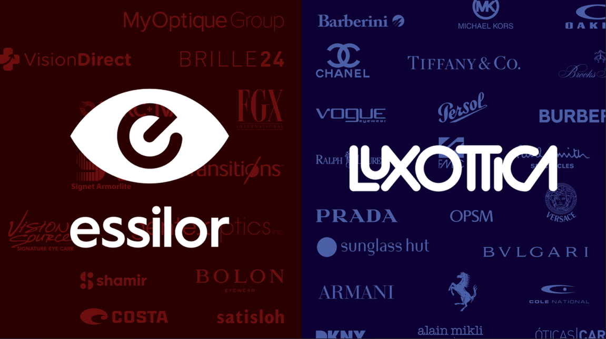
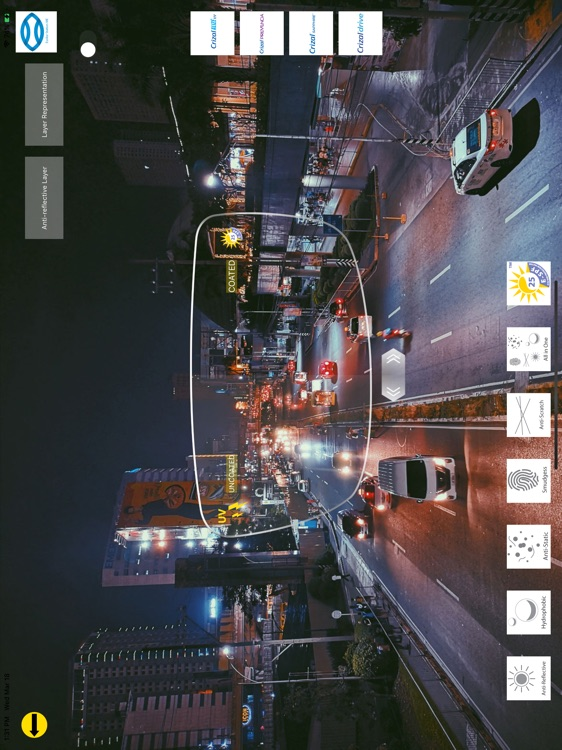
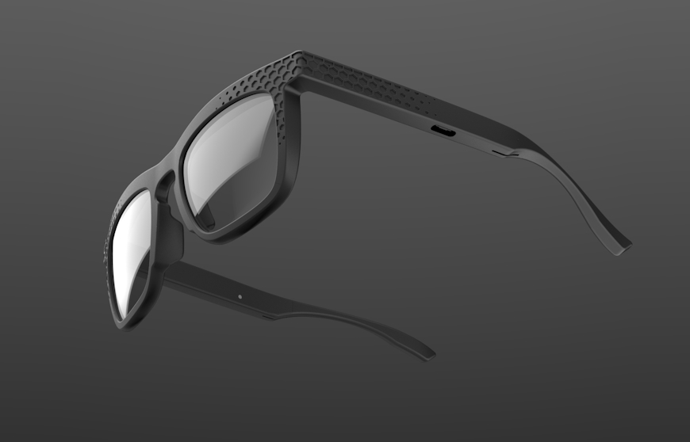
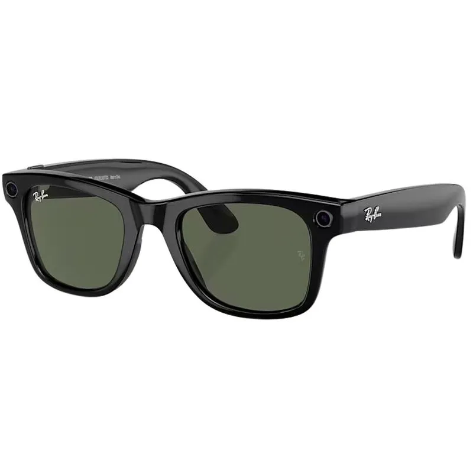
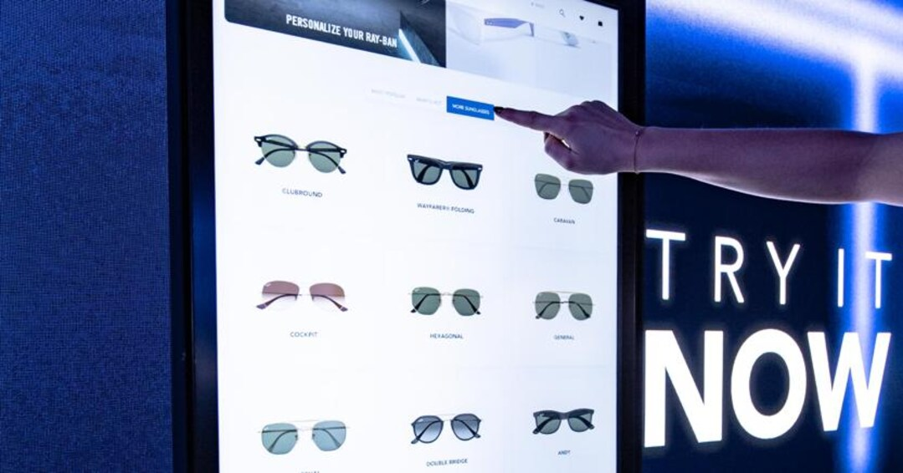
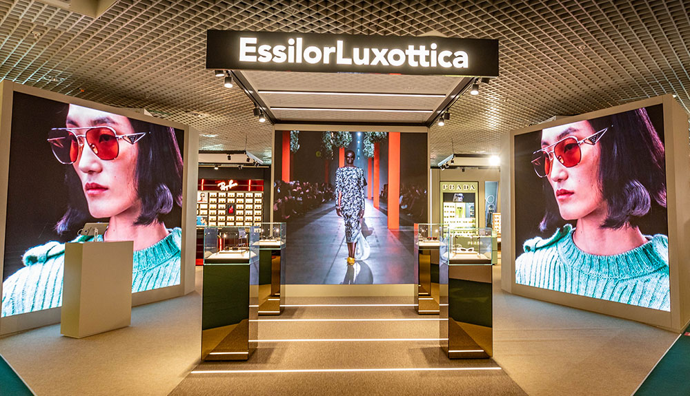

Essilorluxottica


HISTÓRIA DA EMPRESA
Fundação da Essilor
A origem da Essilor remonta a 1849, em Paris, com a criação da La Société des Lunetiers, uma cooperativa de artesões especializados na fabricação de óculos. Combinando habilidade técnica e ambição, o grupo buscava se tornar um dos principais fabricantes de lentes corretivas da cidade. Em 1962, a cooperativa passou a se chamar Essel. Mais tarde, em 1972, a fusão entre Essel e a empresa Silor resultou na criação da Essilor, que se tornaria uma líder global em lentes oftálmicas.

Fundação da Luxottica:
A Luxottica foi fundada em 1961, por Leonardo Del Vecchio, na região de Agordo, no norte da Itália. Inicialmente, a empresa operava como uma pequena oficina especializada na fabricação de componentes para óculos, atuando como fornecedora para terceiros no setor óptico. Ao longo da década de 1960, Del Vecchio decidiu integrar todas as etapas da produção internamente, passando a fabricar armações completas. A partir dos anos 1970, a empresa iniciou um processo acelerado de expansão vertical e internacionalização, que a levaria a se tornar uma das maiores fabricantes e distribuidoras de óculos do mundo.

Fusão da Essilor e Luxottica:
A Luxottica dominava a produção de armações, mas não produzia lentes (essenciais para óculos de grau). A Essilor, por outro lado, era líder mundial em fabricação de lentes oftálmicas. Reconhecendo a complementaridade das duas empresas, Leonardo Del Vecchio, fundador da Luxottica, articulou a fusão estratégia com a Essilor. Essa união foi concretizada em 2018, dando origem à EssilorLuxottica, uma empresa capaz de oferecer soluções completas de visão em escala mundial.

Missão da Essilorluxottica
Ajudar as pessoas em todo o mundo a "ver mais e ser mais". Isso guia a estratégia geral, inspira a abordagem ao desenvolvimento sustentável e, em última análise, impulsiona a nossa ambição de ajudar a eliminar a baixa visão não corrigida em uma geração. Está mais do que claro que a boa visão é um direito humano fundamental e tem o poder de mudar tudo.

Ética da EssilorLuxottica:
Dentro da empresa há uma abordagem ética que se estende tanto aos colaboradores quanto aos parceiros de negócios. Existem dois códigos principais: Código de Ética e o Código de Conduta dos Parceiros de Negócios; Esses códigos definem os princípios e expectativas que se aplicam a todos os colaboradores, contratados, vendedores e fornecedores da EssilorLuxottica, representando um conjunto mínimo de padrões que não podem ser comprometidos e estão de acordo com as estruturas internacionais.
Política de Qualidade:
A Política de Qualidade, assunto devidamente arquivado em um documento estratégico (https://www.essilorluxottica.com/pt/cap/content/230126/), expressa o compromisso dessa organização em garantir e melhorar a qualidade de seus produtos ou serviços. Tal documento define as diretrizes e objetivos que a Luxottica busca alcançar para satisfazer as necessidades dos clientes e cumprir os regulamentos aplicáveis. A Política de Qualidade, de forma a abranger todos os setores possíveis da empresa, é comunicada em todos os níveis da organização e revisada periodicamente para que seja garantida sua relevância e eficácia.
OneSight EssilorLuxottica Foundation:
De forma que o futuro promissor da democratização da saúde da visão seja atingido, foi criada a OneSight EssilorLuxottica Foundation, que tem como objetivo ajudar a eliminar a baixa visão não corrigida até 2050, aumentando a consciência sobre a importância de uma boa visão e criando acesso permanente aos cuidados com a visão globalmente. É a maior Fundação do mundo promovendo o acesso e oferecendo uma plataforma que aproveita o compromisso dos colaboradores e parceiros para a criação de pontos de acesso sustentáveis; inovando soluções acessíveis; financiando serviços subsidiados e gratuitos.

Estrutura EssilorLuxottica:
-Marcas Próprias do Grupo:
Ray-Ban; Oakley; Persol; Oliver Peoples; Vogue Eyewear; Arnette; Costa del Mar; Alain
Mikli; Native Eyewear; Sferoflex; Polo Ralph Lauren Eyewear
-Marcas Licenciadas:
Essas marcas são de outras empresas, mas a EssilorLuxottica tem licença exclusiva
para desenhar, fabricar e vender óculos delas:
Prada; Chanel; Versace; Burberry; Dolce & Gabbana; Armani (Giorgio Armani, Emporio
Armani); Michael Kors; Tory Burch; Coach; Ralph Lauren; Tiffany & Co.; Bvlgari; DKNY;
Miu Miu; Valentino
-Redes de Varejo:
Além das marcas, eles também possuem redes de lojas:
Ópticas Carol; Sunglass Hut; LensCrafters; Salmoiraghi & Viganò; GrandVision; Target
Optical; Générale d'Optique
-Conselho De Administração:
Responsáveis pela administração da empresa:
Francesco Milleri - PRESIDENTE E CEO
Paul du Saillant - VICE-DIRETOR EXECUTIVO
Margot Bard - CONSELHEIROS REPRESENTANTES DE FUNCIONÁRIOS
Romolo Bardin - CONSELHEIRO NÃO INDEPENDENTE
Jean-Luc Biamonti - CONSELHEIRO PRINCIPAL (INDEPENDENTE)
Sébastien Brown - CONSELHEIROS REPRESENTANTES DE FUNCIONÁRIOS
Marie-Christine - Coisne-Roquette CONSELHEIRO INDEPENDENTE
José Gonzalo - CONSELHEIRO INDEPENDENTE
Mario Notari - CONSELHEIRO NÃO INDEPENDENTE
Swati A. Piramal - CONSELHEIRA INDEPENDENTE
Virginie Mercier Pitre - CONSELHEIRO REPRESENTANTE DA VALOPTEC
ASSOCIATION
Cristina Scocchia - CONSELHEIRA INDEPENDENTE
Nathalie von Siemens - CONSELHEIRA INDEPENDENTE
Andrea Zappia - CONSELHEIRO INDEPENDENTE
-Comitês:
Esses Comitês atuam com base na autoridade que lhes foi delegada pelo Conselho de
Administração e fazem recomendações e propostas ao Conselho de Administração. Os
Comitês não atuam no lugar do Conselho de Administração, mas sim como uma
extensão do Conselho de Administração, facilitando seus trabalhos.
-Comitê de Auditoria e Riscos:
Atuando sob a responsabilidade do Conselho de Administração, o Comitê de Auditoria
e Riscos acompanha os assuntos relacionados à elaboração e auditoria das
demonstrações financeiras e informações financeiras. Para quaisquer questões
relacionadas ao cumprimento e à eficiência da auditoria interna e dos principais
sistemas de gestão de riscos, o Comitê de Auditoria e Risco deve trabalhar em estreita
colaboração com o Comitê de Responsabilidade Social Corporativa para estabelecer
um quadro abrangente de quaisquer questões financeiras ou não financeiras.
É composto por três membros:
Jean-Luc Biamonti - PRESIDENTE
Cristina Scocchia - CONSELHEIRA INDEPENDENTE
Romolo Bardin - CONSELHEIRO INDEPENDENTE
-O Comitê de Responsabilidade Social Corporativa:
O principal dever do Comitê de RSC, no âmbito do Conselho de Administração, é
garantir que a cultura da empresa seja efetivamente mantida e seguida e que o Grupo
aborde efetivamente o desdobramento de sua Missão de ajudar as pessoas a “ver mais
e ser mais”.
É composto por três membros:
Swati A. Piramal - PRESIDENTE
Nathalie von Siemens - CONSELHEIRA INDEPENDENTE
Virginie Mercier Pitre - CONSELHEIRO REPRESENTANTE DA VALOPTEC
ASSOCIATION
-O Comitê de Indicação e Remuneração:
Com referência à Indicação, o Comitê examina e recomenda ao Conselho de
Administração as pessoas que podem ser nomeadas como Conselheiros e desenvolve
um plano de sucessão para os diretores da Companhia.
Com referência à Avaliação, o Comitê auxilia principalmente o Conselho nas avaliações
periódicas de seus membros, organização e operação, bem como de seus comitês.
Com referência à Remuneração, o Comitê apresenta principalmente propostas sobre a
política de remuneração e a remuneração dos diretores da Companhia e dos
Conselheiros, e também (entre outras coisas) examina a conformidade da política de
remuneração, sua estrutura e componentes com os requisitos legais e o Código AFEPMEDEF (AFEP-MEDEF é o código de referência para governança corporativa em
empresas de capital aberto na França, estabelecendo diretrizes e recomendações para
melhorar o desempenho e a transparência das empresas).
É composto por três membros:
Andrea Zappia - PRESIDENTE
José Gonzalo - CONSELHEIRO INDEPENDENTE
Romolo Bardin - CONSELHEIRO INDEPENDENTE
Setores:
A EssilorLuxottica atua em vários setores, incluindo design, fabricação, distribuição,
pesquisa e desenvolvimento, e varejo.
Design; Fabricação; Distribuição; Pesquisa e Desenvolvimento; Automação e
manutenção; Compras; EHS; Engenharia de manutenção; Engenharia de processos e
melhoria contínua; Recursos humanos; Supply chain; Tecnologia da informação
-Realizam todo o Projeto e Produção de suas armações e lentes, se responsabilizando
desde o Design até distribuições para suas marcas, lojas e consumidores.
-Fábricas de lentes: espalhadas em vários países, produzem lentes personalizadas de
alta tecnologia
-Fábricas de armações: grandes polos de produção na Itália (especialmente em Agordo
e Belluno), na China e nos EUA.
-Tecnologia de ponta: usam impressão 3D, robótica, automação, e inteligência artificial
para desenhar e fabricar óculos.
-Inova para atender às demandas dos consumidores
-Cria e expande categorias em áreas como controle de miopia, presbiopia, e controle
de luz e proteção ocular
-Desenvolve tecnologias de armações, estojos e acessórios para óculos
-Busca por tecnologias que atendam as demandas globais de cada geração. Eles
pesquisam tudo ligado à visão, lentes, armações e experiências digitais.
-Novos materiais para lentes (mais leves, mais resistentes, mais inteligentes)
-Tratamentos antirreflexo, anti-riscos, proteção contra luz azul
-Armações mais ergonômicas e sustentáveis • Lentes inteligentes (como as óculos com
realidade aumentada que eles estão desenvolvendo junto com a Meta, os Ray-Ban
Stories)
-Personalização das lentes para cada tipo de olho e estilo de vida
-Tecnologias digitais para exames ópticos (por exemplo, equipamentos de medição que
usam inteligência artificial)
-Sustentabilidade
-Patentes: A EssilorLuxottica registra centenas de patentes por ano — são uma das
empresas que mais patenteiam no setor óptico.
Ambiente
O ambiente da EssilorLuxottica é composto por fatores internos e externos que
influenciam suas atividades:
Ambiente Interno:
Cultura Organizacional: A empresa valoriza a inovação, o foco no consumidor, o
trabalho em equipe e a responsabilidade social. Após a fusão, houve um
trabalho intenso de unificação de culturas (francesa e italiana), enfatizando
diversidade e inclusão.
Capacidade de Inovação: Investimentos constantes em pesquisa e
desenvolvimento (P&D) mantêm a empresa à frente em tecnologias de lentes,
materiais sustentáveis e soluções digitais.
Ambiente Externo:
Concorrência: Atua em um mercado competitivo com grandes nomes como
Johnson & Johnson Vision, Safilo Group e marcas emergentes.
Tendências de Consumo: A demanda por óculos de grau e de sol cresceu com o
envelhecimento da população global e o aumento do uso de telas digitais,
fatores que a EssilorLuxottica explora com novos produtos.
Pressões Regulatórias: Está sujeita a legislações de saúde e segurança óptica
em diferentes países, além de normas antitruste, especialmente após sua fusão.
Sustentabilidade: Há crescente pressão pública e governamental para práticas
mais ecológicas, o que impulsiona iniciativas ambientais da empresa, como
redução de emissões de carbono e fabricação de produtos recicláveis.
Ambiente Político:
Em muitos países, Óculos e Lentes são considerados produtos médicos, portanto a
EssilorLuxottica tem que estar de acordo com diversas leis, regras de segurança,
testes clínicos e aprovações para vender suas lentes.
Cada país tem suas normas a
serem seguidas (ex: Anvisa no Brasil), isso faz com que a empresa faça um grande
investimento para garantir que todos os requisitos sejam atendidos para que ocorra a
venda de seus produtos.
Além disso, por ser uma gigante do mercado a EssilorLuxottica vive sob o olhar de
agências reguladoras. Sempre que tenta fazer fusões ou aquisições, precisa da
aprovação de órgãos como a Comissão Europeia, FTC nos EUA e Cade no Brasil (exemplo:
a fusão entre Essilor e Luxottica só foi aprovada depois de longas investigações para
garantir que não prejudicaria a competição).
Com todo esse cenário eles às vezes precisam vender partes de seus negócios ou
mudar práticas para serem aceitos.
Como exporta e importa produtos no mundo inteiro, a EssilorLuxottica sofre influência
de Tarifas de importação e Acordos comerciais (ex.: tratados entre União Europeia e
Mercosul).
Com as guerras comerciais (por exemplo, EUA x China), os custos para vender óculos
nos EUA subiram, forçando a empresa a aumentar preços, influenciando o preço que
chega ao consumidor final.
Ambiente Social:
Busca atender a demanda gerada pelo envelhecimento da população, onde cada
grupo necessita de necessidades específicas, então procuram atender essas
necessidades e democratizar o acesso a óculos.
Também entende que óculos não são apenas saúde, mas também estão presentes na
moda, no estilo e na imagem que as pessoas transmitem.
Supply chain
Supply Chain (Cadeia de Suprimentos) é o conjunto de processos, pessoas,
tecnologias e recursos envolvidos em todas as etapas da produção e entrega de um
produto ou serviço ao cliente final.
Isso inclui desde a extração da matéria-prima, passando pela fabricação,
armazenamento, transporte, até o consumo final. Ou seja, a cadeia de suprimentos
abrange tudo que acontece entre o fornecedor inicial e o cliente final.
Componentes da Cadeia de Suprimentos
Fornecedores:
-Onde tudo começa: fornecem matérias-primas ou componentes.
Fábricas / Produção:
-Transformam matérias-primas em produtos acabados.
Centros de Distribuição / Armazenagem:
-Armazenam produtos temporariamente antes da entrega.
Transporte / Logística:
-Movimentam os produtos entre os elos da cadeia.
Varejo / Cliente Final:
-Onde o produto é vendido ou entregue ao consumidor.
Durante todo esse processo, dados, pedidos, pagamentos e informações também
circulam.
Objetivos principais do Supply Chain:
-Entregar o produto certo, no prazo certo, ao custo certo.
-Reduzir desperdícios e custos ao longo da cadeia.
-Melhorar a satisfação do cliente.
-Aumentar a eficiência e a lucratividade da empresa.
Supply Chain da EssilorLuxottica
A EssilorLuxottica opera um modelo de negócios verticalmente integrado, cobrindo
todas as etapas do processo de criação de valor, desde o design e fabricação de
produtos até a venda ao consumidor final.
Produção e Manufatura:
Fábricas de Lentes e Armações: A empresa possui 48 fábricas, sendo 35 dedicadas à
produção em massa de lentes corretivas e planas, e 13 focadas na produção em
massa de óculos.
Laboratórios de Prescrição: Complementando a produção, existem 583 laboratórios de
lentes que realizam acabamento, polimento, revestimentos e integração de armações,
permitindo a personalização em larga escala.
Distribuição e Logística
Centros de Distribuição: A EssilorLuxottica conta com uma rede global de 128 centros
de distribuição que coordenam o fluxo logístico entre fornecedores, fábricas de
produção, laboratórios de lentes de prescrição, clientes atacadistas, lojas de varejo e
clientes de comércio eletrônico.
Centro de Distribuição em Sedico: O centro de distribuição em Sedico, Itália, é uma
plataforma que processa todos os suprimentos para os centros de distribuição da
Luxottica, pedidos de clientes atacadistas, lojas de varejo e pedidos individuais do
comércio eletrônico.
Presença Global e Localização Estratégica
Presença Global: Com operações em mais de 150 países e 190.000 colaboradores, a
empresa mantém uma presença significativa em todas as regiões, segmentos de
negócios e canais comerciais.
Operação no Brasil: No Brasil, a EssilorLuxottica possui uma operação completa. Em
2021, investiu em um centro de distribuição próprio em Sumaré (SP), proporcionando
maior autonomia nos processos logísticos.
Inovação e Tecnologia na Cadeia de Suprimentos
Automação e Robótica: A empresa emprega tecnologias avançadas, como automação
e robótica, para aumentar a eficiência da fabricação. Por exemplo, a instalação EMTC
4 implementou a tecnologia Tape-Non-Edge (TNE), aumentando a eficiência
operacional em 30%.
Inteligência Artificial (IA): A EssilorLuxottica explora o uso de IA, aprendizado de
máquina e robôs colaborativos para melhorar o planejamento, produção e atendimento
ao cliente.
Sustentabilidade e Ética na Cadeia de Suprimentos
Aquisição Responsável: A empresa possui um programa de aquisição responsável
baseado em pilares como trabalho e direitos humanos, saúde e segurança, meio
ambiente, governança e ética. Avaliações de risco dos fornecedores e auditorias locais
são realizadas por terceiros qualificados.
Compromisso Ambiental: A EssilorLuxottica implementa iniciativas para reduzir sua
pegada de carbono, como o uso de materiais reciclados nas embalagens e a meta de
alcançar 100% de desvio de resíduos até 2025.
Planejamento e Controle de Produção
Gestão de Supply Chain: A empresa realiza o planejamento orçamentário anual de
produção, baseado na expectativa e mix de vendas, visando otimizar a capacidade dos
recursos produtivos disponíveis. Também participa do processo de SIOP (Sales,
Inventory & Operations Planning) para desdobrar a demanda no plano de produção
industrial.
Enterprise Resource Planning
Um sistema de gestão empresarial onde um único
software integra e organiza todos os processos e dados da empresa (Financeiro,
Contabilidade, Recursos Humanos (RH), Vendas, Compras, Estoque, Produção e
Logística) com o objetivo de automatizar, agilizar e facilitar seus processos.
A EssilorLuxottica implementou uma estratégia robusta de modernização de seus
sistemas de Enterprise Resource Planning (ERP) para otimizar suas operações
globais. Com um modelo de negócios verticalmente integrado, a empresa cobre todas
as etapas do processo de criação de valor, desde o desenvolvimento e fabricação de
produtos até a venda ao consumidor final.
Com a fusão entre a francesa Essilor e a italiana Luxottica, a empresa herdou uma
variedade de sistemas ERP e middleware personalizados, resultando em uma
infraestrutura tecnológica fragmentada. Essa complexidade dificultava a integração de
dados entre aplicações internas e sistemas externos. Além disso, a empresa precisava
processar entre 70.000 e 80.000 pedidos diários, exigindo uma solução que permitisse
integrações de dados em tempo real e de forma assíncrona.
Para superar esses desafios, a EssilorLuxottica adotou a plataforma Boomi Atom
Sphere, uma solução de integração como serviço baseado em nuvem.
Essa plataforma permite:
-Integração em tempo real: Unificação de dados entre aplicações internas e pedidos de
clientes de diversos canais;
-Gestão de APIs: Monitoramento unificado de aplicações através de uma única
interface;
-Simplificação de EDI: Facilitou as transações de intercâmbio eletrônico de dados com
parceiros e clientes;
-Automatização de fluxos de trabalho: Redução de processos manuais e aumento da
eficiência operacional;
Com a ajuda da Boomi, a EssilorLuxottica conseguiu identificar e corrigir fatores que
degradavam o desempenho, como o protocolo NFS, permitindo que o processamento
de pedidos de ponta a ponta fosse reduzido para 30 segundos.
A implementação da plataforma Boomi trouxe benefícios significativos para a
EssilorLuxottica:
-Aumento de eficiência operacional: Simplificação do compartilhamento de arquivos
resultou em um aumento de eficiência operacional de quatro vezes;
-Redução de custos: Otimização da infraestrutura de integração de dados levou à
redução de custos operacionais;
-Melhoria na experiência do cliente: Processamento de pedidos mais rápido e preciso
melhorou a satisfação do cliente;
-Escalabilidade: A solução permitiu à empresa lidar com cargas de dados maiores e
expandir suas operações para novos mercados;
A transformação digital da EssilorLuxottica teve impacto global. No Brasil, a empresa
expandiu sua presença com a abertura de novas lojas das marcas Ray-Ban e Oakley
além de outras do grupo, como Sunglass Hut e Óticas Carol.Essa expansão foi
facilitada pela modernização dos sistemas ERP e pela integração eficiente de dados,
permitindo uma operação mais ágil e responsiva às demandas do mercado local.
Modelo de Negócios
Integração Vertical Completa
O modelo de negócios é verticalmente integrado, cobrindo todas as etapas do processo de criação de
valor — desde o pensamento criativo, desenvolvimento e fabricação de produtos até a venda direta
ao consumidor final. Essa abordagem permite controlar a qualidade em cada ponto da cadeia,
garantindo uma experiência de marca coesa e diferenciada. Cada armação, por exemplo, conta com
uma lente única e perfeitamente ajustada para acompanhar seu design, proporcionando uma
experiência impecável ao cliente.
Foco na Qualidade como Diferencial Estratégico
A excelência na fabricação, nos serviços prestados e na experiência do consumidor é o centro da
proposta de valor da empresa. Esse foco em qualidade funciona como principal diferencial
estratégico no mercado global, assegurando consistência e alto padrão em todos os pontos de
contato com a marca.
Atuação nos Modelos B2C e B2B
Atuam tanto no modelo B2C quanto no B2B (atacado). No B2C, se destacam pelo atendimento
personalizado, utilizando sistemas de informação que permitem adaptar os serviços às preferências
e características individuais de cada cliente. As pessoas são únicas, e por isso, devem ter uma
experiência sob medida.
Investimento em Pesquisa, Desenvolvimento e Tecnologia
Investimento continuo em P&D, utilizando Tecnologias da Informação e Comunicação (TICs) para
agregar valor em toda a cadeia. Um exemplo é a parceria com a Meta para desenvolver o óculos
Ray-Ban com Inteligência Artificial, unindo design icônico a funcionalidades inovadoras. Também
aplicando machine learning no desenvolvimento de lentes e no design das armações, garantindo alta
performance e inovação.
Produção com Presença Global
Fábricas estrategicamente localizadas em diversas regiões do mundo, o que facilita a expansão
internacional e garante maior agilidade na distribuição de produtos. Essa presença geográfica
fortalece a capacidade de resposta às demandas locais e globais.
Digitalização da Indústria
A transformação digital é um dos principais motores estratégicos de crescimento. Incorporando
Inteligência Artificial e Machine Learning em toda a cadeia de valor — desde o design e engenharia
até a experiência do consumidor, tanto nas lojas físicas quanto online. Essa digitalização nos
permite oferecer soluções inovadoras, como interações online inteligentes, serviços de telemedicina
e plataformas digitais que beneficiam consumidores, profissionais e todos os stakeholders do setor
oftalmológico e de saúde visual.
Inovações em Tecnologia da Informação
Lens Simulator
O Lens Simulator é uma experiência interativa desenvolvida para óticas: usando um tablet, o cliente aponta para uma paisagem real e visualiza na hora como seria enxergar com diferentes lentes — como progressivas ou com tratamento antirreflexo. Isso torna a escolha da lente muito mais intuitiva e segura.

Smart Shopper
O Smart Shopper é um assistente de compras inteligente para e-commerces: ele analisa suas preferências e hábitos de consumo para sugerir produtos que combinam com seu perfil, sempre buscando o melhor custo-benefício. Mais praticidade, personalização e economia para o cliente.
Pulse Audition
O Pulse Audition é uma tecnologia integrada a óculos que ajuda pessoas com perda auditiva leve a ouvir melhor. Utilizando inteligência artificial, ele reduz o ruído ambiente e melhora a percepção da fala de forma discreta, sem parecer um aparelho auditivo tradicional.

Smart Eyewear
O Smart Eyewear representa a evolução dos óculos tradicionais, integrando tecnologia de ponta ao design óptico. Mais do que melhorar a visão, ele conecta o usuário a funcionalidades inteligentes, como suporte auditivo, aprimoramento sensorial e experiências personalizadas, tudo de forma discreta e natural no dia a dia.

Virtual Mirror
O Virtual Mirror é uma solução de realidade aumentada que permite ao usuário experimentar diferentes modelos de óculos virtualmente, em tempo real, usando apenas a câmera de um dispositivo. Com alta precisão e ajuste automático, ele torna a escolha do modelo ideal mais prática, personalizada e divertida, tanto em lojas físicas quanto no e-commerce.

As 5 forças de Porter
Poder de negociação/barganha dos fornecedores:
-Número limitado de fornecedores de lentes e armações de qualidade
A empresa depende de um número limitado desses fornecedores, a EssilorLuxottiica adquire
materiais de 80 fornecedores espalhados pelo mundo, grande parte de seus insumos são
provenientes de um grupo seleto de 20 Fornecedores. (Essa concentração pode aumentar os custos
caso os fornecedores optem por aumentar os preços.)
-Alguns fornecedores podem exercer maior poder de negociação devido a
materiais exclusivos:
Certos fornecedores podem ter um maior poder de negociação devido ao fornecimento de materiais
exclusivos, Exemplo disso é que apenas alguns fabricantes fornecem lentes de policarbonato
avançada, essenciais para os óculos de grau premium (Ray-ban, Oakley, entre outros)
Obs: Em 2022 o preço sobre esses materiais aumentaram em aproximadamente 10% devido ao
aumento dos custos de produção.
Dependência de fornecedores de tecnologia especializados:
Aumento de custos relacionados a fornecedores de impressão 3d e tecnologias computadorizadas
(surfaçagem). Nos últimos anos, os custos associados a essas tecnologias aumentaram em 15%
aproximadamente
Contratos de longo prazo (Tentativa de reduzir o poder de negociação do
fornecedor):
Para amenizar a pressão dos fornecedores, a EssilorLuxottica firmou contratos de longo prazo com
fornecedores importantes, Fixando valores e garantindo um fornecimento estável, certa de 60% das
necessidades de materiais são garantidas por esses contratos de longo prazo.
Poder de Barganha dos Clientes:
É influenciado por diversos fatores, principalmente pela influencia
de grandes varejistas e pela estrutura geral do mercado
Grandes Varejistas e redes têm um aumento significativo:
A base de clientes, incluem grandes varejistas, com o Walmart e Costco, esses mesmos varejistas
possuem uma boa parcela substancial das vendas da essilorluxottica, por exemplo: o Wallmart
gerou 24bi em vendas no setor e oculos em 2022, o grande volume de receita cria um cenario
perfeito para os varejistas negociarem valores mais baixos, impactando a margem e lucro geral da
essilorluxottica.
A diferenciação da marca pode reduzir o poder do cliente(Tentativa
de reduzir o poder de negociação do cliente):
O portfolio diversificado de marcas, como Ray-ban. Oakley, Persol e etc, desempenham um papel
crucial na reduçao do poder de negociação dos clientes, A empresa relatou que 60% da receita total
veio de produtos de marca, a forte fidelidade à marca ajda a reddzir a sensibilidade ao preço entre
os clientes, permitindo que a essilorluxottica mantenha margens mais altas.
Os canais de comércio eletronico oferecem aos clientes
mais opções
O aumento do comercio eletronico proporcionou aos clientes mais opções, impulsionando a
competição por preços e produtos com maior custo-beneficio, pressionando então, os varejistas
tradicionais e a EssilorLuxottica a permanecerem competitivos
Programas de fidelidade e Customização de vendas(Tentativa de
reduzir o poder de negociação do cliente):
A entrega de um serviço customizado para cada indivíduo, vendas diretas ao consumidor(B 2 C) e a
implementação de diversos programas de fidelidade para aumentar a retenção de clientes e reduzir o
poder de negociação, não apenas recompensam os consumidores recorrentes, mas tambem criam
uma conexao emocional, reduzindo a probabilidade do cliente migrar para a concorrencia apenas
pelo preço.
Rivalidade competitiva:
Alta Concorrência de marcas de óculos estabelecidas no mercado:
O setor de óculos inclui grandes players. A EssilorLuxottica detém uma particiação de mercado de
cerca de 23%, enquanto os concorrentes como Safilo e Kering detêm 8% e 7% respectivamente
Participação de Mercado contestada por segmentos
premium e acessíveis:
Os óculos acessíveis e de mais baixo custo, que são direcionados para a massa, contemplam a maior
parte do faturamento do mercado de óculos, A essilorluxottica atende ambos os segmentos, por
meio de marcas como Rayban na categoria acessivel, e Persol no setor premium, aumentando seu
posicionamento competitivo
Alianças e aquisições estratégicas comuns entre concorrentes.
Ou seja, remover seu concorrente da jogada e ao mesmo tempo se introduzir no mercado,
diminuindo ou removendo completamente os pontos fracos, (Marca com foco em lealdade e valor
de mercado. E marca com foco na base da piramide, com produtos mais acessíveis)
A compra a Oakley e da Ray-Ban de forma estrategica, e uma grande parceria com a
GrandVision( Lider em varejo ótico).
Ameaça de novos participantes
A ameaça de novos participantes no mercado de óculos é moderada por vários fatores significativos
que contribuem para altas barreiras de entrada. A EssilorLuxottica se beneficia desse cenário
competitivo visto que é líder de mercado
Altas barreiras de entrada devido à lealdade e reputação da marca
forte presença no mercado com a Ray-ban e a Oakley, que cultivam
lealdade substancial do consumidor.
A EssilorLuxottica tem ao seu favor uma grande presença no mercado, como a Ray-ban, Oakley, e
entre outras, que desencadeiam lealdade no consumidor
Economias de escala desafiam novos participantes
A extensa rede de distribuição e os recursos de fabricação da EssilorLuxottica permitem economias
de escala substanciais.
Enorme investimento de capital necessário para pesquisa e
produção
A entrada no mercado exige grandes investimentos em instalações, pesquisas e desenvolvimento.
Requisitos regulatórios (leis) rigorosos em várias regiões
A indústria dos óculos está sujeita a regulamentos rigorosos sobre padrões de saúde e segurança,
diversos órgãos regulamentadores exigem conformidade com oculos de grau prescritos
Patentes que protegem seus produtos inovadores, cobrindo várias tecnologias na fabricação de
lentes e no design dos óculos. Essa patente fornece vantagem sobre concorrentes já consolidados no
mercado e aumentam a barreira de entrada no mesmo.
Ameaça de substitutos:
Métodos de correção de visão, como LASIK:
A cirurgia se apresenta como um substituto para os óculos de grau tradicionais, método que vem
crescendo ano após ano.
Lentes de contato como uma opção mais conveniente:
Sua conveniência e conforto afetam significativamente a participação do mercado de óculos
tradicional
Marcas de óculos genéricas mais baratas disponíveis:
A disponibilidade de óculos genéricos com preços mais baixos intensificou a concorrência no
mercado de óculos. Varejistas oferecem óculos elegantes a preços menores, fornecendo alternativas
viáveis ao consumidor.
Dispositivos digitais reduzindo a necessidade de óculos tradicionais.
Com o avanço dos dispositivos digitais, muitos usuários preferem usar softwares para amenizar o
uso de óculos, como por exemplo o filtro de luz azul
Tópicos abordados e Fontes
Tópicos obrigatórios:
História da empresa - Cultura da empresa - Ambiente - Estrutura - Modelo de Negócios
Tópicos extras:
Ética - Política de Qualidade - Inovações em Tecnologia da Informação - Supply Chain - Enterprise Resource Planning - Forças de Porter
Fontes:
História = https://www.essilorluxottica.com/pt/grupo/historia/
Missão da Essilor Luxottica e One Sight EssilorLuxottica Foundation = https://www.essilorluxottica.com/pt/grupo/missao/
Ética = https://www.essilorluxottica.com/pt/sustentabilidade/eyes-on-ethics/
Política de Qualidade = https://www.essilorluxottica.com/pt/cap/content/230126/
Inovações em Tecnologia da Informação = https://www.essilorluxottica.com/pt/2023highlights/digital-transformation/
Estrutura e Ambiente = https://www.essilorluxottica.com/pt/ (principais informações foram tiradas do site da empresa)
Enterprise Resource Planning = https://www.frontier-enterprise.com/essilorluxottica-harnesses-boomi-platform-to-spee
https://tecnogazzetta.it/smart-office/2022-09-15-essilorluxottica-modernizza-lelaborazione-degli-ordini.html
Supply Chain = https://supplychaindigital.com/company-reports/essilor-delivering-gift-sight-through-robust-supply-chain-transformation
5 Forças de Porter = https://dcfmodeling.com/products/elpa-porters-five-forces-analysis
Modelo de negocio e estrutura organizacional = https://www.youtube.com/watch?v=u4snSGTXxX4
Inteligência Artificial como estratégia de negócio = https://www.just-drinks.com/data-insights/essilorluxottica-in-artificial-intelligence-theme-innovation-strategy/?cf-view
https://www.globaldata.com/store/report/essilorluxottica-sa/?utm_source=lgp6-patents-theme&utm_medium=29-183306&utm_campaign=thematic-report-hyperlink&CampaignValue=701Ti00000PWkanIAD&_gl=1*h2yndr*_ga*MTU4MTYxMzM4My4xNzQ0OTI2NjA3*_ga_
F6833Y0NXS*MTc0NDkyNjYxMS4xLjAuMTc0NDkyNjYxMS42MC4wLjA
Integrantes
Eduardo Ferreira
Amanda Allegretti
Miguel Severo
Lucas Machado
